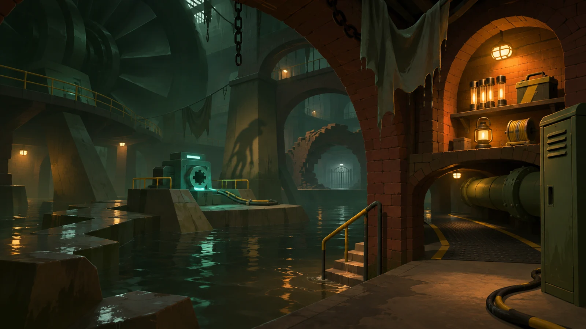
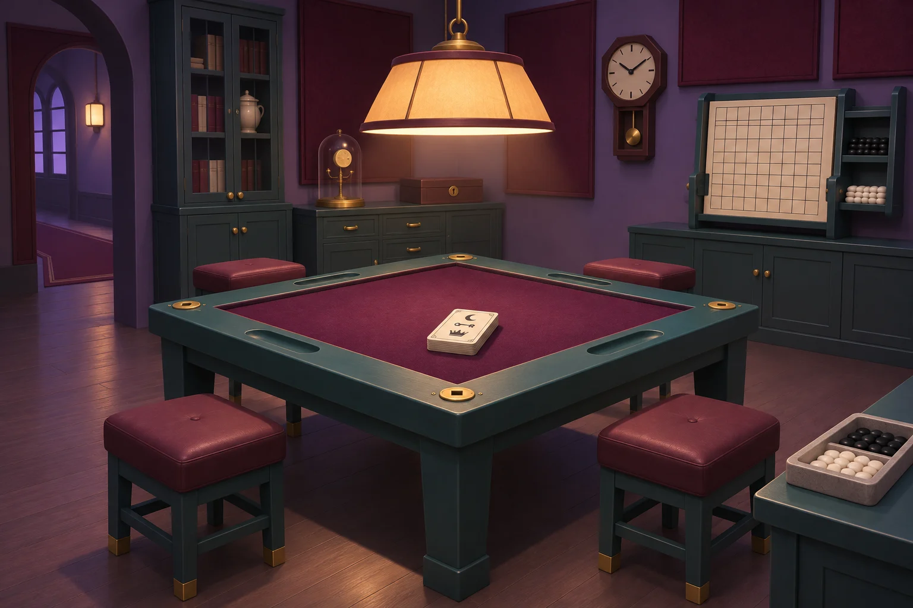
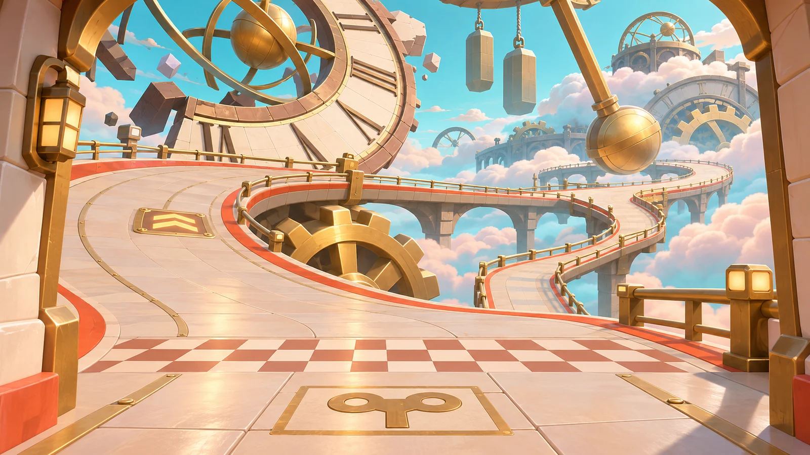
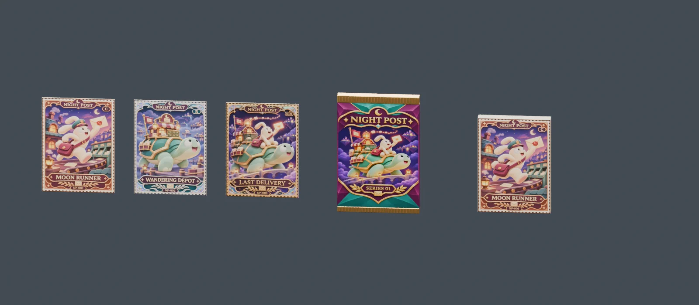
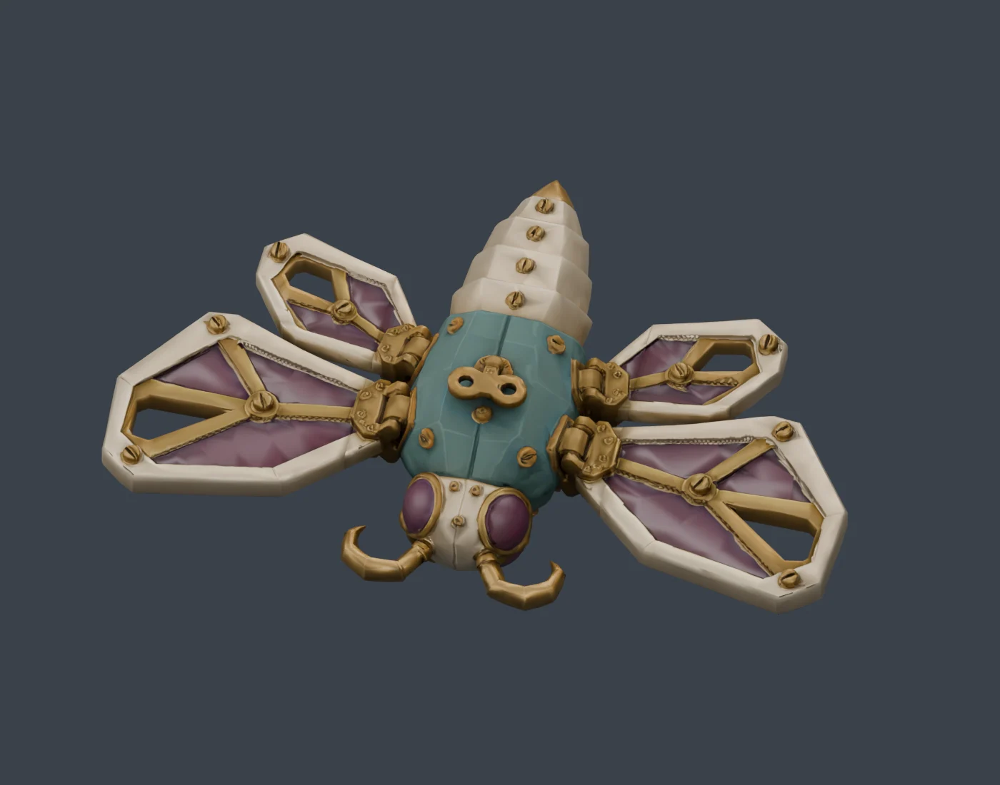

방 시안 · 최종 승인 전
방 시안 · 최종 승인 전CURRENT COLLECTION
전체 방 아이디어
기존 테마, 장르 미니게임, 추가 요청을 한곳에서 확인합니다.
70방 기획 항목
15최신 세계 시안
2공용 기능·소품
36개 장르 미니게임 + 30개 기존 테마 + 4개 기본 공간. 기획 항목 수이며 확정 출시 방 수·구현 완료 수·보드 칸 수가 아니다. 비슷한 테마는 연결해 두고 통합 결정 전까지 보존한다.
방 이름·코드·놀이로 검색할 수 있습니다. 다른 GPT는 이 페이지 또는 전체 목록 JSON을 읽으면 됩니다. 목록과 설명은 JavaScript 없이도 표시됩니다.
70 / 70개 방 기획
방 시안 · 최종 승인 전 방 시안 · 최종 승인 전
방 시안 · 최종 승인 전theme-clockwork · 기존 테마
태엽 공방 (방탈출 퍼즐 · 장르 참고)
흩어진 톱니를 소켓에 운반하고 네 손잡이를 맞춰 감는다
방 시안방 소품 27/27항목 준비
전체 세션 상한 5분 초안 · 실측 전
게임 상태: 게임에 벽·바닥·천장·주요 소품을 반영했습니다. 최종 배치와 장치 동작은 계속 다듬습니다.
 방 시안 · 최종 승인 전
방 시안 · 최종 승인 전theme-pressure · 기존 테마
압력실 (방탈출 퍼즐 · 장르 참고)
밸브를 조절해 변동하는 압력 바늘을 안전 범위에 유지한다
방 시안방 소품 25/26항목 준비
전체 세션 상한 5분 초안 · 실측 전
게임 상태: 게임에 밸브·보일러·배관·정비 구역을 반영했습니다. 벽·바닥·천장과 최종 조명은 작업 중입니다.
 방 시안 · 최종 승인 전
방 시안 · 최종 승인 전theme-parcels · 기존 테마
분실물실 (협동 분류·운반 · 장르 참고)
둘씩 팀을 이뤄 무게와 모양에 맞는 소포를 분류한다
방 시안방 소품 28/28항목 준비
전체 세션 상한 5분 초안 · 실측 전
게임 상태: 30×30×6m T형 방에 접수·분류·포장·계량 구역의 새 가구와 소품을 연결했습니다. 실제 Play에서 E 집기·배달과 봇의 소포12개 배달을 확인했습니다. 준비 상태와 플레이어 접근 위치는 테스트용으로 지정했습니다. 벽·바닥·천장 마감, 중앙 밀도, 손 접촉과 소포의 물리 동작은 아직입니다.
 방 시안 · 최종 승인 전
방 시안 · 최종 승인 전FA · 기본 공간
달빛 온실 (참고작 미정)
네 재료를 순서에 맞춰 우물에 조합
공간 시안 준비 전모델 상태 별도 확인
전체 세션 상한 5분 초안 · 실측 전
게임 상태: 이 기획·최신 외형의 실제 게임 반영은 별도 확인
 새 세계 시안 · 최종 승인 전
새 세계 시안 · 최종 승인 전 새 세계 시안 · 최종 승인 전
새 세계 시안 · 최종 승인 전 새 세계 시안 · 최종 승인 전
새 세계 시안 · 최종 승인 전 새 세계 시안 · 최종 승인 전
새 세계 시안 · 최종 승인 전
새 세계 시안 · 최종 승인 전
공용 테이블 방 참고 시안 · 최종 승인 전 새 세계 시안 · 최종 승인 전
새 세계 시안 · 최종 승인 전CL · 장르 미니게임
끝없는 절벽 구조대 (PEAK)
계단을 걸어 오르는 방이 아니라 손으로 벽을 잡고 동료를 구조하는 등반 방이다. 아래 바닥은 보이지 않는다.
새 세계 시안선행 소품 후보 있음
전체 세션 상한 10분 초안 · 실측 전
다른 이름·검색어: 클라이밍 · 거대 절벽 · SG03
- 위아래가 끝없이 이어지고 아래 바닥이 보이지 않는 초대형 산악 절벽. 손잡이·휴식 턱·동료 구조로 오른다. 연속 계단길은 목표에서 제외한다.
- SG03은 이 방에 연결되는 절벽 소품 묶음이며 별도 방으로 중복 집계하지 않는다.
게임 상태: 이 기획·최신 외형의 실제 게임 반영은 별도 확인
 새 세계 시안 · 최종 승인 전
새 세계 시안 · 최종 승인 전SG01 · 장르 미니게임
심연의 유리다리 (오징어 게임 — 유리다리 · 드라마)
무작위 찍기만 하는 게임 대신 가까운 유리의 소리·짧은 진동 단서를 읽고 건넌다. 개인전은 별도 후속 변형이다.
새 세계 시안선행 소품 후보 있음
전체 세션 상한 5분 초안 · 실측 전
다른 이름·검색어: 유리다리 · 거대 유리다리 · 오징어게임
- 아래 바닥이 보이지 않는 거대한 심연 위의 유리판 횡단. 현재 모듈과 별도로 실제 점프 거리·경로·탈락 판정 검토가 필요하다.
게임 상태: 이 기획·최신 외형의 실제 게임 반영은 별도 확인

새 세계 시안 · 최종 승인 전 새 세계 시안 · 최종 승인 전
새 세계 시안 · 최종 승인 전 새 세계 시안 · 최종 승인 전
새 세계 시안 · 최종 승인 전UP · 장르 미니게임
우주까지 벼리는 대장간 (검 강화 · 참고작 미정)
재료를 모아 1~15강 중 가능한 단계로 검을 바꾸고 짧은 시험 타격으로 성과 비교
공간 시안 준비 전선행 소품 후보 있음
전체 세션 상한 5분 초안 · 실측 전
다른 이름·검색어: 검 키우기 · 검 강화 · 1강 · 15강 · 우주검 · 블랙홀
- 1강부터 15강까지 장식만 쌓는 방식이 아니라 전체 실루엣과 구조 자체가 달라진다. 우주를 베거나 천지를 가르는 과장도 허용하되 공통 그림체는 유지한다.
- 15강은 칼다운 긴 날과 손잡이, 별처럼 갈라진 밑몸체와 열린 홈, 별도 블랙홀이 기준이다. 블랙홀 내부는 검정 원이고 가장자리에 아주 희미한 보라색 빛만 둔다.
- 15종 검과 각 3단계 LOD·별도 검정 핵/희미한 테두리의 모델 후보가 있다. 최종 외형 승인, 손 피팅, 강화 규칙과 실시간 왜곡 효과는 남아 있다.
게임 상태: 이 기획·최신 외형의 실제 게임 반영은 별도 확인
 새 세계 시안 · 최종 승인 전
새 세계 시안 · 최종 승인 전SG02 · 장르 미니게임
돌아보는 정원 (오징어 게임 — 무궁화꽃이 피었습니다 · 드라마)
부엉이가 등을 돌렸을 때 이동하고 눈이 켜지기 전에 멈춘다. 중앙 구간은 감시를 피해 숨는 미로가 아니라 반응 속도를 겨루는 열린 길이다.
새 세계 시안선행 소품 후보 있음
전체 세션 상한 5분 초안 · 실측 전
다른 이름·검색어: 무궁화꽃이 피었습니다 · 무궁화 꽃 · 오징어게임
- 감시자가 등을 돌린 동안 이동하고 돌아볼 때 멈춘다. 현재 외형 후보는 독자적인 거대 기계 부엉이다.
게임 상태: 이 기획·최신 외형의 실제 게임 반영은 별도 확인
LOBBY · 기본 공간
대기 로비 (참고작 미정)
개인 부스에서 자기 태엽을 꽂고 자기 캡슐에 탑승한다. 전원 준비 후 문이 잠기고 아래로 하강해 게임을 시작한다.
공간 시안 준비 전모델 상태 별도 확인
진행 공간 · 미니게임 시간과 별도
- 이전 공용 바닥 상승 시작은 최신 개인 캡슐 하강 방식으로 대체됐다.
게임 상태: 이 기획·최신 외형의 실제 게임 반영은 별도 확인
DICE · 기본 공간
주사위 방 (참고작 미정)
함께 주사위를 굴리고 다음 방으로 이동
공간 시안 준비 전모델 상태 별도 확인
진행 공간 · 미니게임 시간과 별도
게임 상태: 이 기획·최신 외형의 실제 게임 반영은 별도 확인
theme-pantry · 기존 테마
뒤집힌 식료품실 (참고작 미정)
주문판에 잠깐 보인 재료를 기억해 자기 바구니에 담는다
공간 시안 준비 전모델 상태 별도 확인
전체 세션 상한 5분 초안 · 실측 전
게임 상태: 이 기획·최신 외형의 실제 게임 반영은 별도 확인
theme-music · 기존 테마
자장가 다락 (참고작 미정)
서로 다른 소리의 악기를 순서대로 눌러 멜로디를 복원한다
공간 시안 준비 전모델 상태 별도 확인
전체 세션 상한 5분 초안 · 실측 전
게임 상태: 이 기획·최신 외형의 실제 게임 반영은 별도 확인
theme-archive · 기존 테마
수상한 기록실 (참고작 미정)
열린 서랍의 순서를 기억하고 바뀐 물건 하나를 먼저 찾는다
공간 시안 준비 전모델 상태 별도 확인
전체 세션 상한 5분 초안 · 실측 전
게임 상태: 이 기획·최신 외형의 실제 게임 반영은 별도 확인
theme-library · 기존 테마
기울어진 도서관 (참고작 미정)
두 명이 긴 책더미를 떨어뜨리지 않고 옮겨 책장을 채운다
공간 시안 준비 전모델 상태 별도 확인
전체 세션 상한 5분 초안 · 실측 전
게임 상태: 이 기획·최신 외형의 실제 게임 반영은 별도 확인
theme-portraits · 기존 테마
움직이는 초상화실 (참고작 미정)
짧게 공개되는 인물 포즈를 네 명의 위치와 방향으로 맞춘다
공간 시안 준비 전모델 상태 별도 확인
전체 세션 상한 5분 초안 · 실측 전
게임 상태: 이 기획·최신 외형의 실제 게임 반영은 별도 확인
theme-shadows · 기존 테마
그림자 극장 (참고작 미정)
조명과 물건 위치를 맞춰 목표 실루엣을 만든다
공간 시안 준비 전모델 상태 별도 확인
전체 세션 상한 5분 초안 · 실측 전
게임 상태: 이 기획·최신 외형의 실제 게임 반영은 별도 확인
theme-observatory · 기존 테마
오래된 관측실 (참고작 미정)
회전하는 별판을 보고 필요한 표식을 제일 먼저 조준한다
공간 시안 준비 전모델 상태 별도 확인
전체 세션 상한 5분 초안 · 실측 전
게임 상태: 이 기획·최신 외형의 실제 게임 반영은 별도 확인
theme-greenhouse · 기존 테마
덩굴 온실 (참고작 미정)
넘치는 물을 분배해 네 화분의 수위를 함께 유지한다
공간 시안 준비 전모델 상태 별도 확인
전체 세션 상한 5분 초안 · 실측 전
게임 상태: 이 기획·최신 외형의 실제 게임 반영은 별도 확인
theme-mushrooms · 기존 테마
버섯 저장고 (참고작 미정)
안전한 색 순서로 나타나는 버섯 발판을 밟아 버틴다
공간 시안 준비 전모델 상태 별도 확인
전체 세션 상한 5분 초안 · 실측 전
게임 상태: 이 기획·최신 외형의 실제 게임 반영은 별도 확인
theme-honey · 기존 테마
벌꿀 작업실 (참고작 미정)
무거운 벌꿀 항아리를 옮겨 팀의 저울을 목표치에 맞춘다
공간 시안 준비 전모델 상태 별도 확인
전체 세션 상한 5분 초안 · 실측 전
게임 상태: 이 기획·최신 외형의 실제 게임 반영은 별도 확인
theme-pond · 기존 테마
연못 관리실 (참고작 미정)
떠다니는 마개를 잡아 누수 구멍을 함께 막는다
공간 시안 준비 전모델 상태 별도 확인
전체 세션 상한 5분 초안 · 실측 전
게임 상태: 이 기획·최신 외형의 실제 게임 반영은 별도 확인
theme-orchard · 기존 테마
바람 부는 과수실 (참고작 미정)
바람 방향에 따라 떨어지는 과일을 바구니로 받아낸다
공간 시안 준비 전모델 상태 별도 확인
전체 세션 상한 5분 초안 · 실측 전
게임 상태: 이 기획·최신 외형의 실제 게임 반영은 별도 확인
theme-laundry · 기존 테마
유령 세탁실 (참고작 미정)
색이 섞인 빨랫감을 찾아 빨랫줄 순서에 맞춘다
공간 시안 준비 전모델 상태 별도 확인
전체 세션 상한 5분 초안 · 실측 전
게임 상태: 이 기획·최신 외형의 실제 게임 반영은 별도 확인
theme-kitchen · 기존 테마
야간 주방 (참고작 미정)
서로 다른 조리 단계를 맡아 시간 안에 같은 주문을 완성한다
공간 시안 준비 전모델 상태 별도 확인
전체 세션 상한 5분 초안 · 실측 전
게임 상태: 이 기획·최신 외형의 실제 게임 반영은 별도 확인
theme-bath · 기존 테마
넘치는 욕실 (참고작 미정)
낮아지는 안전 발판을 따라 올라가며 분출 물줄기를 피한다
공간 시안 준비 전모델 상태 별도 확인
전체 세션 상한 5분 초안 · 실측 전
게임 상태: 이 기획·최신 외형의 실제 게임 반영은 별도 확인
theme-sewing · 기존 테마
마녀의 재봉실 (참고작 미정)
긴 실을 끌어 길을 만들고 팀 표식 구멍을 차례대로 통과한다
공간 시안 준비 전모델 상태 별도 확인
전체 세션 상한 5분 초안 · 실측 전
게임 상태: 이 기획·최신 외형의 실제 게임 반영은 별도 확인
theme-dining · 기존 테마
불안한 만찬실 (참고작 미정)
기울어지는 식탁 위 식기를 균형에 맞게 나눠 놓는다
공간 시안 준비 전모델 상태 별도 확인
전체 세션 상한 5분 초안 · 실측 전
게임 상태: 이 기획·최신 외형의 실제 게임 반영은 별도 확인
theme-arcade · 기존 테마
고장 난 유희실 (참고작 미정)
등이 켜지는 표적을 눌러 점수를 얻고 함정 표적은 피한다
공간 시안 준비 전모델 상태 별도 확인
전체 세션 상한 5분 초안 · 실측 전
게임 상태: 이 기획·최신 외형의 실제 게임 반영은 별도 확인
theme-marbles · 기존 테마
구슬 공작실 (참고작 미정)
각자 조절하는 경사판을 연결해 구슬을 목표 구멍에 넣는다
공간 시안 준비 전모델 상태 별도 확인
전체 세션 상한 5분 초안 · 실측 전
게임 상태: 이 기획·최신 외형의 실제 게임 반영은 별도 확인
theme-puppets · 기존 테마
인형 무대 (참고작 미정)
멈춰야 하는 박자에 네 인형의 자세를 동시에 맞춘다
공간 시안 준비 전모델 상태 별도 확인
전체 세션 상한 5분 초안 · 실측 전
게임 상태: 이 기획·최신 외형의 실제 게임 반영은 별도 확인
theme-blocks · 기존 테마
블록 창고 (참고작 미정)
제시된 높이까지 흔들리는 블록을 쌓아 버틴다
공간 시안 준비 전모델 상태 별도 확인
전체 세션 상한 5분 초안 · 실측 전
게임 상태: 이 기획·최신 외형의 실제 게임 반영은 별도 확인
theme-bells · 기존 테마
종지기 방 (참고작 미정)
바닥 진동과 종소리 순서를 읽고 해당 위치에서 함께 울린다
공간 시안 준비 전모델 상태 별도 확인
전체 세션 상한 5분 초안 · 실측 전
게임 상태: 이 기획·최신 외형의 실제 게임 반영은 별도 확인
theme-vault · 기존 테마
봉인 금고실 (참고작 미정)
서로 다른 단서의 다이얼을 공유해 팀 금고를 먼저 연다
공간 시안 준비 전모델 상태 별도 확인
전체 세션 상한 5분 초안 · 실측 전
게임 상태: 이 기획·최신 외형의 실제 게임 반영은 별도 확인
theme-sand · 기존 테마
모래시계실 (참고작 미정)
모래가 바닥나기 전에 무거운 시계를 번갈아 뒤집어 균형을 유지한다
공간 시안 준비 전모델 상태 별도 확인
전체 세션 상한 5분 초안 · 실측 전
게임 상태: 이 기획·최신 외형의 실제 게임 반영은 별도 확인
theme-relics · 기존 테마
유물 운반실 (참고작 미정)
금이 간 유물을 충격 없이 운반해 점수를 지킨다
공간 시안 준비 전모델 상태 별도 확인
전체 세션 상한 5분 초안 · 실측 전
게임 상태: 이 기획·최신 외형의 실제 게임 반영은 별도 확인
theme-lenses · 기존 테마
빛의 봉인실 (참고작 미정)
거울과 렌즈를 옮겨 네 수신기에 동시에 빛을 보낸다
공간 시안 준비 전모델 상태 별도 확인
전체 세션 상한 5분 초안 · 실측 전
게임 상태: 이 기획·최신 외형의 실제 게임 반영은 별도 확인
theme-final · 기존 테마
마지막 태엽실 (참고작 미정)
앞서 얻은 장치를 네 자리에 맞추고 추격자가 닿기 전에 문을 연다
공간 시안 준비 전모델 상태 별도 확인
전체 세션 상한 5분 초안 · 실측 전
게임 상태: 이 기획·최신 외형의 실제 게임 반영은 별도 확인
 새 세계 시안 · 최종 승인 전
새 세계 시안 · 최종 승인 전 새 세계 시안 · 최종 승인 전
새 세계 시안 · 최종 승인 전 새 세계 시안 · 최종 승인 전
새 세계 시안 · 최종 승인 전 새 세계 시안 · 최종 승인 전
새 세계 시안 · 최종 승인 전해당 방이 없습니다. 검색어 또는 필터를 바꿔 주세요.
방 밖에서도 쓰는 기능·소품
아래 항목은 방 기획 수에 더하지 않습니다.
토끼·거북이 카드 뽑기 · 밤샘 우편국

독자 세계관의 카드와 팩을 모으는 기능. 밤샘 우편국은 임시 채택 이름이며 토끼 배달부, 이동 거북 우편소, 마지막 배달의 카드 3종을 준비했다.
- MUR 같은 희귀 카드의 밀도·금박·홀로그램 감각을 참고한다. 카드 앞면·공통 뒷면·분리 봉합부·속 빈 팩 모델 후보가 있다.
- 독립된 방으로 편성할지는 미정이다. 뽑기 확률·게임 규칙·시선에 따라 변하는 홀로그램 효과도 미확정이다.
아트·모델 후보 있음 · 독립 방 미정
비행 소품과 작은 먼지·파편

방마다 필요한 물건을 만든 뒤 날아가는 물체와 작은 환경 소품까지 확장한다. 태엽 나방·우편 배달 드론·종이비행기·씨앗·화살·먼지·포장지·잎·볼트·기어 조각을 공용 후보로 준비했다.
- 비행 AI·실제 물리·파티클 방출과 군집 성능은 별도 작업이다. 반복 소품은 공용 메시, 미세먼지는 효과용 텍스처를 활용한다.
공용 소품 후보 있음 · 동작 연결 별도
미편성 놀이 후보
많은 생존놀이를 넣자는 요청에 대한 추가 제안입니다. 독립 방·최종 룰·제작 순서는 정하지 않았습니다.
- 줄다리기 — 거대 생존놀이 확장의 추가 제안 · 방 ID·룰·제작 순서 미정
- 구슬 내기 — 추가 제안 · 경사판을 연결하는 구슬 공작실과 다른 놀이 후보
- 모양 떼기 — 추가 제안 · 방 ID·룰·제작 순서 미정
- 인원 맞춰 문으로 이동 — 추가 제안 · 방 ID·룰·제작 순서 미정
- 징검돌 — 추가 제안 · 기존 유리다리/발판 방과의 구분 검토 전
공통 방향과 제작 기준
- 주사위를 굴려 네 명이 함께 다음 방으로 이동한다. 보드의 모든 칸은 방이며 방마다 개인전·팀전·협동과 장르가 달라진다.
- 로비에서는 각자 태엽을 꽂고 자기 캡슐에 들어간다. 전원 준비 후 하강해 시작하며, 이후 방 사이 이동은 매립 레일과 작은 바퀴를 사용한다. 실패하면 추격자가 가까워진다.
- 게임에서는 전체 맵을 공개하지 않고 현재 방을 1인칭으로 경험한다. 방 안에 거대한 세계가 펼쳐지며 외곽·높이·동선·밀도·빛을 서로 다르게 만든다.
- 미래·스팀펑크·판타지 등 세계관은 달라도 두툼한 비율, 큰 면, 절제된 모서리와 재질의 공통 그림체를 유지한다.
- 한 방은 최대 약 5~10분. 일반 방 5분·큰 협동 방 10분은 임시 편성 기준이며 짧은 파티게임을 억지로 5분 이상 늘리지 않는다.
- 기존 방 시안을 우선 활용해 게임에 맞게 조정한다. 방 전체 시안 → 별도 배치 시안 → 물건 목록 → 단독 시안 → 3D 제작 → Blender 정리·검수 → 방별 인계 순서다.
사용자 방향과 에이전트의 임시 명칭·세부 규칙을 구분한다. 컨셉 시안·모델 후보·게임 적용·최종 승인은 각각 별도 단계다.